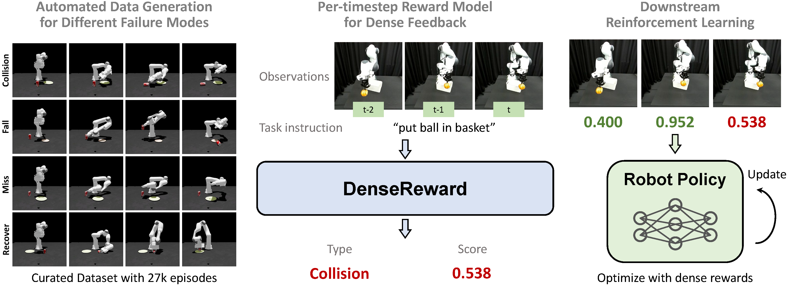
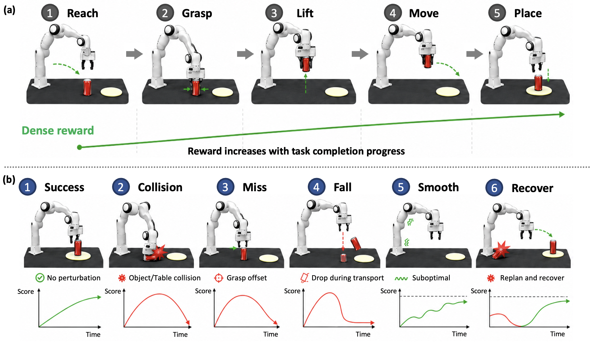
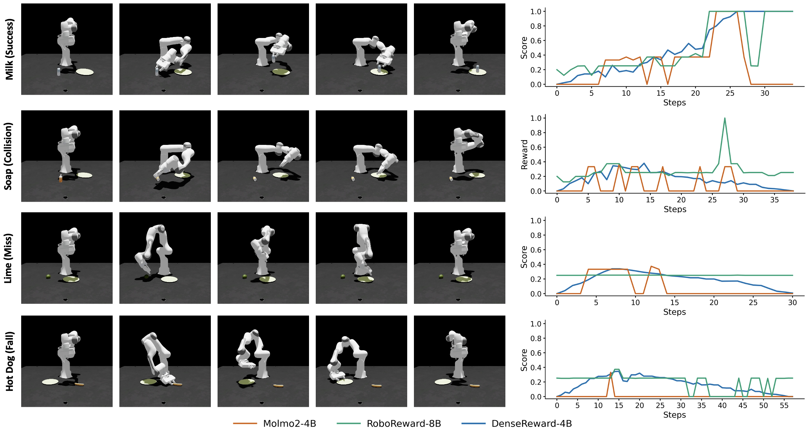
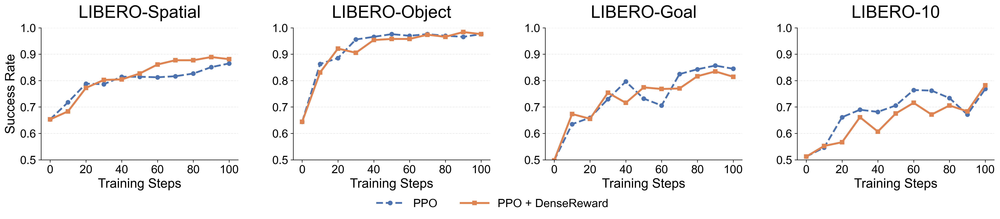
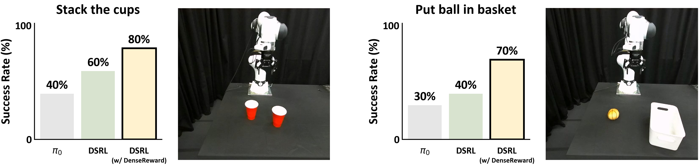

* Equal contribution

We present a dense robotic reward model for vision-language-guided manipulation. (a) We curate a dataset with 27k episodes by automatically producing diverse trajectories across different failure modes, providing scalable dense reward annotations. (b) Given a task instruction and observations consisting of the current frame and historical frames, DenseReward predicts a per-timestep dense reward score that reflects task progress. Unlike binary success/failure labels, this dense reward provides fine-grained feedback for intermediate states. (c) The predicted rewards can be used in downstream reinforcement learning for policy improvement.
Reinforcement learning holds great promise for improving robot policies beyond the limits of imitation learning. However, its practical adoption remains bottlenecked by the lack of reliable vision-language reward models that provide dense and informative feedback. Two key challenges remain: acquiring diverse failure data at scale and obtaining fine-grained reward signals beyond sparse trajectory-level success labels. Collecting failure trajectories typically requires laborious human effort, while pseudo-failures constructed by relabeling successful demonstrations fail to capture the diverse physical failure modes that arise during robot execution. Meanwhile, existing reward models often predict sparse binary or trajectory-level rewards, which provide limited guidance for efficient policy optimization.
We introduce DenseReward, a dense robotic reward model that addresses both challenges. To train DenseReward, we develop an automated failure data generation pipeline that synthesizes physically realistic failure trajectories in simulation without human labeling, covering diverse failure modes such as collisions, missed grasps, object drops, and recovery behaviors. DenseReward predicts dense frame-level reward scores from visual observations and language instructions, enabling fine-grained estimation of task progress throughout an episode.
Experiments show that DenseReward outperforms general-purpose VLMs and existing robotic reward models in dense reward prediction across both simulated and real-world manipulation. We further demonstrate that DenseReward provides effective reward guidance for downstream model predictive control and reinforcement learning. We release the dataset, trained reward models, and evaluation suite to support the development of failure-aware dense reward modeling for robot learning.
Our method consists of three components: 1) an automated data generation pipeline that generates trajectories with phase-aware dense reward labels, 2) failure synthesis that creates diverse failure trajectories through targeted perturbations, and 3) DenseReward models trained on the resulting mixture of successful and failure trajectories to estimate fine-grained task progress.

DenseReward achieves the best overall performance with an average prediction error (MAE) of 0.081, outperforming general-purpose VLMs and existing robotic reward models across all evaluated data sources.
| Model | Overall | DROID | Isaac Sim | RoboSuite | LIBERO |
|---|---|---|---|---|---|
| Qwen3-VL-4B-Instruct | 0.289 | 0.532 | 0.285 | 0.195 | 0.478 |
| Qwen3-VL-8B-Instruct | 0.293 | 0.538 | 0.305 | 0.180 | 0.502 |
| Molmo2-4B | 0.282 | 0.506 | 0.282 | 0.187 | 0.478 |
| Molmo2-8B | 0.335 | 0.480 | 0.307 | 0.303 | 0.455 |
| RoboReward-4B | 0.275 | 0.534 | 0.269 | 0.179 | 0.470 |
| RoboReward-8B | 0.230 | 0.484 | 0.185 | 0.172 | 0.431 |
| Robometer | 0.366 | 0.521 | 0.328 | 0.345 | 0.468 |
| DenseReward (Ours) | 0.081 | 0.259 | 0.081 | 0.051 | 0.044 |
Dense reward prediction results (mean absolute error, lower is better).

We evaluate reward models for guiding downstream control in a sampling-based MPC setting: at each decision step, 28 candidate actions are sampled and scored by the reward model, and the highest-scoring action is executed. We report the minimum end-effector-to-object distance (lower is better). DenseReward achieves the best average performance, showing that its dense rewards provide more effective guidance for closed-loop control.
| Model | Can | Cup | Lemon | Avg. |
|---|---|---|---|---|
| RoboReward-4B | 0.199 | 0.307 | 0.295 | 0.267 |
| RoboReward-8B | 0.314 | 0.270 | 0.317 | 0.300 |
| VLAC-2B | 0.316 | 0.346 | 0.380 | 0.347 |
| VLAC-8B | 0.351 | 0.360 | 0.363 | 0.358 |
| DenseReward (Ours) | 0.219 | 0.181 | 0.288 | 0.229 |
MPC performance on three object manipulation tasks (minimum distance, lower is better).
We apply DenseReward for online PPO fine-tuning of a $\pi_0$ policy on the LIBERO benchmark, combining the sparse simulator success signal with dense chunk-level rewards. Compared with the sparse-reward PPO baseline, DenseReward achieves higher success on LIBERO-Spatial and LIBERO-10, while matching the strong final performance on LIBERO-Object.

We evaluate DenseReward for real-world online RL on a DROID platform, using DSRL to steer a frozen $\pi_0$ policy with only 10–20 real-world rollout trajectories. Adding DenseReward improves the success rate from 40% to 80% on stack the cups, and from 30% to 70% on put ball in basket, showing that dense feedback enables efficient policy improvement under limited rollout budgets.
